배우기 전에 먼저 해 보세요. 틀려도 괜찮아요.
Wozu lernst du Deutsch?는 무엇을 묻는 말일까요?
Wozu는 목적을 물어요.
Ich habe aufgehört, Listen zu schreiben.에서 말하는 사람은 지금 목록을 쓰나요?
aufhören은 '그만두다'예요.
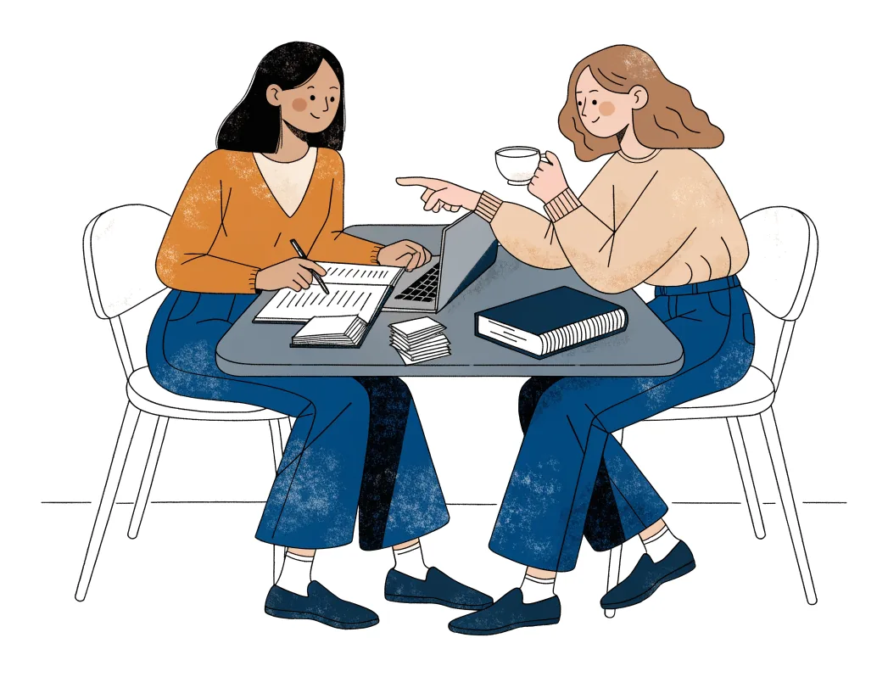
B1에서는 사실을 넘어 생각과 이유를 말해요. 첫 과의 주제는 배움 그 자체예요. 왜 독일어를 배우는지, 무엇이 어렵고 무엇이 도움이 됐는지 이야기해요. 목적을 말하는 um … zu와 damit을 배우고, zu가 들어가는 문장을 넓혀요.
문법 Infinitiv mit zu, um … zu, damit
과제대학어학 목표와 학습 계획을 글로 쓰기
과제직장회사에 어학 과정 지원을 요청하는 메일 쓰기
이 과를 마치면 배우는 이유와 목표를 말하고, 학습 경험을 나누고, 조언을 주고받을 수 있어요.
이 과에서 쓸 말이에요. 눌러서 먼저 들어 보세요.
배우기 전에 먼저 해 보세요. 틀려도 괜찮아요.
Wozu lernst du Deutsch?는 무엇을 묻는 말일까요?
Wozu는 목적을 물어요.
Ich habe aufgehört, Listen zu schreiben.에서 말하는 사람은 지금 목록을 쓰나요?
aufhören은 '그만두다'예요.
7월의 저녁, WG 부엌이에요. Jiu는 지난주에 저녁 독일어 과정을 마쳤어요. 그런데도 공책을 펴 놓고 있어요.
들으면서 찾아보세요. Lena에게는 스페인어를 배울 때 무엇이 도움이 됐나요?
월요일 오전, Frau Hoffmann의 사무실이에요. Dohyun이 직업 독일어 과정에 대해 의논하러 왔어요.
들으면서 찾아보세요. Frau Hoffmann은 Dohyun에게 무엇을 써 달라고 하나요?
어학원의 학습 상담 시간이에요. Sora가 Frau Becker와 이야기해요.
들으면서 찾아보세요. Frau Becker는 새 낱말을 어떻게 적으라고 하나요?
세 대화를 듣고 답하세요.
Jiu는 왜 독일어를 배우나요?
Lena hat jeden Tag zwanzig Vokabeln gelernt, und das hat gut funktioniert.
한 주 뒤에 다 잊어버렸어요.
Lena에게는 무엇이 더 도움이 됐나요?
Dohyun이 듣고 싶은 과정은 언제 하나요?
Der Kurs kostet vierhundertachtzig Euro.
Frau Hoffmann은 메일에 무엇을 적으라고 하나요?
Frau Becker는 새 낱말을 어떻게 적으라고 하나요?
Sora braucht das Zertifikat, um sich zu bewerben.
낱말 52개예요. 낱말이나 예문 앞의 단추를 누르면 소리가 나요. 명사는 der, die, das를 색으로 구분했어요.
die Fremdsprache, die Fremdsprachen 외국어
Deutsch ist meine zweite Fremdsprache.독일어는 제 두 번째 외국어예요.
die Muttersprache, die Muttersprachen 모국어
Meine Muttersprache ist Koreanisch.제 모국어는 한국어예요.
der Wortschatz 어휘
Mein Wortschatz ist noch klein.제 어휘는 아직 적어요.
die Vokabel, die Vokabeln (외울) 낱말
Ich lerne jeden Tag zehn Vokabeln.날마다 낱말 열 개를 외워요.
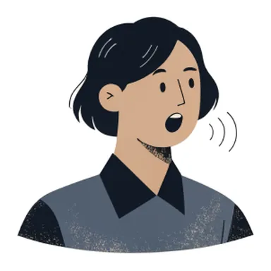
die Aussprache 발음
Deine Aussprache ist sehr gut.발음이 아주 좋아요.
aussprechen (du sprichst aus, hat ausgesprochen) 발음하다
Wie spricht man das Wort aus?그 낱말은 어떻게 발음해요?
die Bedeutung, die Bedeutungen 뜻
Das Wort hat zwei Bedeutungen.그 낱말은 뜻이 두 가지예요.
übersetzen (hat übersetzt) 옮기다, 번역하다
Ich übersetze den Satz ins Koreanische.그 문장을 한국어로 옮겨요.
nachschlagen (du schlägst nach, hat nachgeschlagen) (사전에서) 찾아보다
Ich schlage das Wort nach.그 낱말을 찾아봐요.
das Wörterbuch, die Wörterbücher 사전
Hast du ein Wörterbuch?사전 있어요?
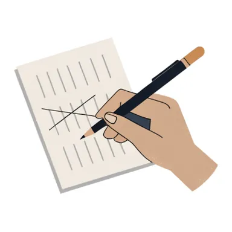
korrigieren (hat korrigiert) 고쳐 주다
Lena korrigiert meine Fehler.Lena가 제가 틀린 곳을 고쳐 줘요.
sich merken (hat sich gemerkt) 기억해 두다
Ich kann mir das Wort nicht merken.그 낱말이 외워지지 않아요.
auswendig lernen 외우다
Ich lerne den Dialog auswendig.대화를 외워요.
verwechseln (hat verwechselt) 헷갈리다
Ich verwechsle oft der und das.저는 der와 das를 자주 헷갈려요.
der Satz, die Sätze 문장
Schreib das Wort in einem Satz auf!그 낱말을 문장으로 적어요!
sich unterhalten (du unterhältst dich, hat sich unterhalten) 이야기를 나누다
Wir unterhalten uns auf Deutsch.우리는 독일어로 이야기해요.
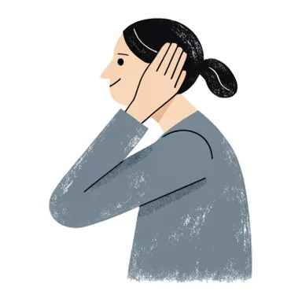
zuhören (hat zugehört) 귀 기울여 듣다
Hör gut zu!잘 들어 봐요!
fließend 막힘없이, 유창하게
Sie spricht fließend Spanisch.그 사람은 스페인어를 유창하게 해요.
die Motivation 의욕
Ohne Motivation lernt man nicht gut.의욕이 없으면 공부가 잘 안 돼요.
motiviert 의욕이 있는
Heute bin ich sehr motiviert.오늘은 의욕이 넘쳐요.
sich vornehmen (du nimmst dir vor, hat sich vorgenommen) 마음먹다
Ich habe mir vorgenommen, mehr zu lesen.책을 더 읽기로 마음먹었어요.
der Fortschritt, die Fortschritte 발전, 느는 것
Du machst schnell Fortschritte.빨리 느네요.
verbessern (hat verbessert) 더 좋게 하다
Ich möchte meine Aussprache verbessern.발음을 더 좋게 하고 싶어요.
das Niveau, die Niveaus 수준
Welches Niveau hat der Kurs?그 과정은 어느 수준이에요?
die Geduld 참을성
Man braucht viel Geduld.참을성이 많이 필요해요.
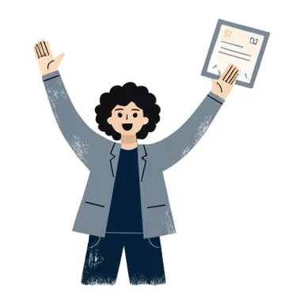
der Erfolg, die Erfolge 성공, 좋은 결과
Viel Erfolg bei der Prüfung!시험 잘 보세요!
stolz 자랑스러운
Ich bin stolz auf dich.당신이 자랑스러워요.
sich trauen (hat sich getraut) 용기를 내다
Ich traue mich nicht, auf Deutsch anzurufen.독일어로 전화할 엄두가 안 나요.
aufgeben (du gibst auf, hat aufgegeben) 포기하다
Gib nicht auf!포기하지 마요!
durchfallen (du fällst durch, ist durchgefallen) (시험에) 떨어지다
Er ist bei der Prüfung durchgefallen.그 사람은 시험에 떨어졌어요.
sich anstrengen (hat sich angestrengt) 애쓰다
Ich habe mich sehr angestrengt.저는 정말 애썼어요.
die Methode, die Methoden 방법
Jeder braucht eine andere Methode.사람마다 맞는 방법이 달라요.
nützlich 쓸모 있는
Die App ist sehr nützlich.그 앱은 아주 쓸모 있어요.
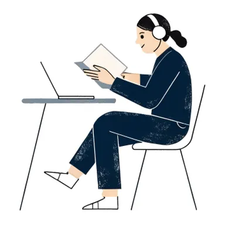
sich konzentrieren (hat sich konzentriert) 집중하다
Am Abend kann ich mich nicht konzentrieren.저녁에는 집중이 안 돼요.
schwierig 어려운
Die Grammatik ist schwierig.문법이 어려워요.
unsicher 자신이 없는
Beim Sprechen bin ich unsicher.말할 때 자신이 없어요.
der Intensivkurs, die Intensivkurse 집중 과정
Der Intensivkurs findet jeden Tag statt.집중 과정은 날마다 해요.
der Abendkurs, die Abendkurse 저녁 과정
Ich mache einen Abendkurs.저는 저녁 과정을 들어요.
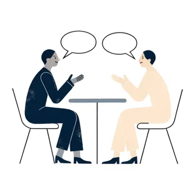
das Tandem, die Tandems 언어 교환
Ich suche ein Tandem für Deutsch und Koreanisch.독일어와 한국어로 언어 교환을 할 사람을 찾아요.
die Volkshochschule, die Volkshochschulen 시민 대학
Die Volkshochschule hat viele Sprachkurse.시민 대학에는 언어 과정이 많아요.
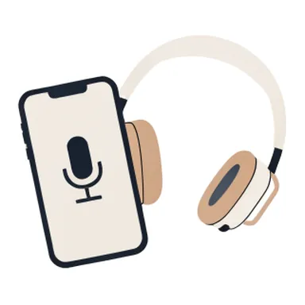
der Podcast, die Podcasts 팟캐스트
Ich höre morgens einen Podcast.아침에 팟캐스트를 들어요.
die Serie, die Serien 드라마, 시리즈
Ich sehe gern deutsche Serien.저는 독일 드라마를 즐겨 봐요.
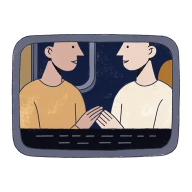
der Untertitel, die Untertitel 자막
Ich sehe Filme mit Untertiteln.저는 영화를 자막과 함께 봐요.
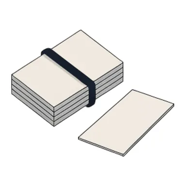
die Karteikarte, die Karteikarten 낱말 카드
Ich schreibe die Wörter auf Karteikarten.낱말을 카드에 적어요.
die Kosten 비용
Die Firma übernimmt die Kosten.비용은 회사가 내요.
unterstützen (hat unterstützt) 돕다, 지원하다
Die Firma unterstützt ihre Mitarbeiter.회사가 직원을 지원해요.
die Unterstützung 지원, 도움
Vielen Dank für Ihre Unterstützung.지원해 주셔서 감사합니다.
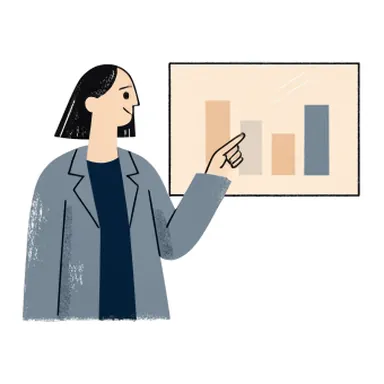
die Präsentation, die Präsentationen 발표
Ich halte morgen eine Präsentation.내일 발표를 해요.
beraten (du berätst, hat beraten) 상담하다, 조언하다
Ich berate die Kunden am Telefon.저는 전화로 고객을 상담해요.
der Ratschlag, die Ratschläge 조언
Danke für den Ratschlag!조언 고마워요!
um … zu ~하려고
Ich lerne Deutsch, um hier zu arbeiten.여기서 일하려고 독일어를 배워요.
damit ~하게, ~하도록
Ich spreche langsam, damit du mich verstehst.당신이 알아듣게 천천히 말해요.
이 과의 낱말로 여덟 문제를 풀어요.
줄을 누르면 소리가 나요. 왼쪽은 내가 하려는 일이고, 오른쪽은 다른 사람이 하게 하려는 일이에요.
줄을 누르면 소리가 나요. 쉼표 뒤에 zu와 동사가 문장 끝에 와요.
규칙
A2.2에서 Ich habe vor, … zu …를 배웠어요. 같은 틀을 세 가지 말 뒤에 써요. 첫째, versuchen, anfangen, aufhören, vergessen, sich vornehmen 같은 동사 뒤예요. 둘째, Lust, Zeit, Angst 같은 명사와 haben 뒤예요. 셋째, Es ist wichtig, Es ist schwierig처럼 Es ist와 형용사 뒤예요. zu와 Infinitiv는 문장 끝에 와요.
| 앞에 오는 말 | 보기 |
|---|---|
| versuchen, anfangen, aufhören | Ich fange an, Serien zu sehen. |
| Lust, Zeit, Angst haben | Ich habe keine Zeit, lange zu lernen. |
| Es ist wichtig, schwierig, normal | Es ist wichtig, viel zu sprechen. |
주의 나뉘는 동사는 zu가 가운데에 들어가요. anfangen은 anzufangen, aufschreiben은 aufzuschreiben이에요. können, müssen, möchten 같은 조동사와 gehen, lernen 뒤에는 zu를 쓰지 않아요. Ich möchte fließend sprechen. Wir gehen zusammen lernen.
규칙을 보고 바로 확인해 보세요.
Ich habe vergessen, die Wörter … 뒤에 올 말은 무엇인가요?
규칙
um … zu는 무엇을 하려고 하는지, 곧 목적을 말해요. um으로 시작하고 zu와 Infinitiv로 끝나요. 앞 문장의 주어와 um … zu의 주어가 같을 때 써요. 그래서 um … zu 안에는 주어를 쓰지 않아요.
| 하는 일 | 목적 |
|---|---|
| Ich lerne Deutsch, | um hier zu arbeiten. |
| Ich höre Podcasts, | um das Hören zu üben. |
| Ich mache den Kurs, | um die Kunden zu beraten. |
주의 목적은 Wozu?로 물어요. Wozu brauchen Sie den Kurs? Um besser zu telefonieren. Warum?으로 물어도 되고, 그때는 weil로도 답할 수 있어요. Weil ich besser telefonieren möchte.
규칙을 보고 바로 확인해 보세요.
Ich brauche das Zertifikat, um mich … 뒤에 올 말은 무엇인가요?
규칙
damit도 목적을 말해요. 앞 문장의 주어와 뒤 문장의 주어가 다르면 um … zu를 쓸 수 없고 damit을 써요. damit 문장은 weil, dass 문장처럼 동사가 끝에 와요. 주어가 같을 때도 damit을 쓸 수 있지만 um … zu가 더 짧고 자연스러워요.
| 주어 | 쓰는 틀 | 보기 |
|---|---|---|
| 같다 | um … zu | Ich lerne, um zu arbeiten. |
| 다르다 | damit | Ich helfe dir, damit du es schaffst. |
주의 주어가 누구인지 먼저 보세요. Ich lerne Deutsch, um … 뒤에는 내가 하는 일이 와요. Ich erkläre es, damit … 뒤에는 다른 사람이 하는 일이 와요. damit 문장에는 können을 자주 함께 써요. … damit ich mit ihr sprechen kann.
규칙을 보고 바로 확인해 보세요.
Lena korrigiert Jiu, … sie schneller Fortschritte macht. 빈칸에 알맞은 말은 무엇인가요?
듣고 알맞은 것을 고르세요.
Jiu는 왜 독일어를 배우나요?
Ich lerne Deutsch, um nach dem Studium hier zu arbeiten.
왜 문장으로 적어야 하나요?
Schreiben Sie neue Wörter in einem Satz auf, damit Sie sie nicht vergessen.
Dohyun에게 무엇이 어렵나요?
Es ist schwierig für mich, am Telefon alles zu verstehen.
Lena는 무엇을 그만뒀나요?
Ich habe aufgehört, Vokabellisten zu schreiben.
어학원 친구 Carlos가 어떻게 공부하는지 이야기해요. 듣고 답하세요.
So lerne ich
Carlos Hallo, ich bin Carlos. Ich komme aus Spanien und lerne seit zwei Jahren Deutsch.
Carlos Am Anfang habe ich nur mit dem Buch gelernt. Das war langweilig, und ich habe schnell die Motivation verloren.
Carlos Jetzt höre ich jeden Morgen einen Podcast, um mich an die Sprache zu gewöhnen.
Carlos Am Wochenende treffe ich meinen Tandempartner Jonas. Er korrigiert meine Aussprache, und ich helfe ihm mit Spanisch.
Carlos Mein Ziel ist, im Frühling die B2-Prüfung zu bestehen.
Warum hat Carlos am Anfang die Motivation verloren?
Carlos는 아침마다 무엇을 하나요?
Was macht der Tandempartner?
Carlos möchte im Frühling die B2-Prüfung bestehen.
대학 Sprachenzentrum의 안내 글이에요. 읽고 답하세요.
So lernen Sie leichter: Tipps vom Sprachenzentrum
Viele Lernende haben das Ziel, schnell fließend zu sprechen. Aber eine Sprache lernt man nicht in drei Monaten. Mit diesen Tipps machen Sie trotzdem jeden Tag Fortschritte.
1. Lernen Sie lieber jeden Tag fünfzehn Minuten als einmal pro Woche drei Stunden.
2. Schreiben Sie neue Wörter in ganzen Sätzen auf, damit Sie sie nicht vergessen.
3. Suchen Sie einen Tandempartner, um das Sprechen zu üben.
4. Haben Sie keine Angst, Fehler zu machen. Aus Fehlern lernt man am meisten.
5. Machen Sie Pausen. Nach 45 Minuten kann man sich nicht mehr gut konzentrieren.
Man kann eine Sprache in drei Monaten lernen.
석 달로는 안 된다고 했어요.
Was ist besser?
Wozu braucht man einen Tandempartner?
Fehler sind schlecht für das Lernen.
틀리면서 가장 많이 배운다고 했어요.
45분이 지나면 어떻게 되나요?
zu가 필요한지 보고 알맞은 것을 고르세요.
Ich versuche, jeden Tag .
날마다 읽으려고 해요.
Ich möchte fließend Deutsch .
독일어를 유창하게 하고 싶어요.
möchten 뒤에는 zu가 없어요.
Es ist wichtig, viel .
많이 말하는 것이 중요해요.
Ich habe keine Zeit, lange .
오래 공부할 시간이 없어요.
Ich habe vergessen, die Wörter .
낱말을 적는 걸 잊어버렸어요.
나뉘는 동사는 zu가 가운데에 들어가요.
Wir gehen heute Abend zusammen .
오늘 저녁에 같이 공부하러 가요.
gehen 뒤에는 zu가 없어요.
um과 damit 가운데 알맞은 것을 고르세요.
Ich lerne Deutsch, in Deutschland zu arbeiten.
독일에서 일하려고 독일어를 배워요.
Ich spreche langsam, du mich verstehst.
당신이 알아듣게 천천히 말해요.
주어가 다르면 damit이에요.
Lena korrigiert Jiu, sie schneller Fortschritte macht.
Jiu가 더 빨리 늘게 Lena가 고쳐 줘요.
Dohyun macht einen Kurs, die Kunden besser zu beraten.
Dohyun은 고객 상담을 더 잘하려고 과정을 들어요.
Schreiben Sie mir eine E-Mail, ich mit der Personalabteilung sprechen kann.
제가 인사팀과 이야기할 수 있게 메일을 써 주세요.
Sora hört Podcasts, sich an das Tempo zu gewöhnen.
Sora는 빠르기에 익숙해지려고 팟캐스트를 들어요.
괄호 안의 동사를 zu와 함께 쓰세요.
Ich lerne Deutsch, um hier . (arbeiten)
여기서 일하려고 독일어를 배워요.
Ich habe angefangen, Serien . (sehen)
드라마를 보기 시작했어요.
Es ist normal, Fehler . (machen)
틀리는 건 당연해요.
Ich habe mir vorgenommen, früher . (aufstehen)
더 일찍 일어나기로 마음먹었어요.
나뉘는 동사는 한 낱말로 써요.
Sie braucht das Zertifikat, um sich . (bewerben)
그 사람은 지원하려면 그 증명서가 필요해요.
낱말을 순서대로 눌러 문장을 만드세요.
여기서 일하려고 독일어를 배워요.
날마다 연습하는 것이 중요해요.
당신이 알아듣게 천천히 말해요.
틀릴까 봐 겁이 나요.
책을 더 읽기로 마음먹었어요.
뜻이 통하는 말을 짝지으세요.
빈칸에 알맞은 낱말을 쓰세요.
Meine ist Koreanisch.
제 모국어는 한국어예요.
Du machst schnell .
빨리 느네요.
Ich sehe Filme mit .
저는 영화를 자막과 함께 봐요.
Gib nicht !
포기하지 마요!
듣고 그대로 써 보세요.
Ich lerne Deutsch, um hier zu arbeiten. 여기서 일하려고 독일어를 배워요.
Ich habe Angst, Fehler zu machen. 틀릴까 봐 겁이 나요.
Es ist wichtig, viel zu sprechen. 많이 말하는 것이 중요해요.
Ich lerne Deutsch, um hier zu arbeiten. 여기서 일하려고 독일어를 배워요.
Ich brauche den Kurs, um besser zu telefonieren. 통화를 더 잘하려면 그 과정이 필요해요.
Ich schreibe Sätze auf, damit ich die Wörter nicht vergesse. 낱말을 잊어버리지 않게 문장을 적어 둬요.
Wozu brauchen Sie das Zertifikat? 그 증명서는 어디에 필요하세요?
Am Anfang war es schwierig, die Leute zu verstehen. 처음에는 사람들 말을 알아듣기 어려웠어요.
Ich habe angefangen, Serien zu sehen. 드라마를 보기 시작했어요.
Das hat mir sehr geholfen. 그게 큰 도움이 됐어요.
Das hat bei mir nicht funktioniert. 저한테는 그게 잘 안 됐어요.
Es ist schwierig für mich, frei zu sprechen. 막힘없이 말하는 것이 저한테는 어려워요.
Ich habe Angst, Fehler zu machen. 틀릴까 봐 겁이 나요.
Ich traue mich oft nicht. 엄두가 안 날 때가 많아요.
Ich vergesse die Wörter schnell. 낱말을 금방 잊어버려요.
Versuchen Sie, jeden Tag laut zu sprechen. 날마다 소리 내어 말해 보세요.
Es ist wichtig, regelmäßig zu lernen. 꾸준히 공부하는 것이 중요해요.
Such dir einen Tandempartner! 언어 교환을 할 사람을 찾아봐요!
Ich würde Podcasts hören. 저라면 팟캐스트를 듣겠어요.
Ich würde gern etwas mit Ihnen besprechen. 의논드리고 싶은 게 있어요.
Könnte die Firma die Kosten übernehmen? 회사에서 비용을 내 줄 수 있을까요?
Der Kurs ist wichtig für meine Arbeit. 그 과정은 제 일에 중요해요.
Vielen Dank für Ihre Unterstützung. 지원해 주셔서 감사합니다.
과제 고르기
역할 대화와 말하기, 쓰기 과제는 대학 생활과 직장 생활 두 가지예요. 하나를 고르면 다음 과에서도 그쪽 과제가 나와요. 언제든 바꿀 수 있어요.
대화 A에서 역할을 하나 고르세요. 상대의 말은 음성으로 나오고, 내 차례에는 직접 말해요.
대화 B에서 역할을 하나 고르세요. 상대의 말은 음성으로 나오고, 내 차례에는 직접 말해요.
내 목표를 떠올리고 칸을 채우세요. 완성된 문장을 소리 내어 읽어 보세요.
Ich lerne Deutsch, um in Deutschland zu arbeiten.
Es ist schwierig für mich, schnell zu sprechen.
Ich habe mir vorgenommen, jeden Tag einen Podcast zu hören.
Beim Lernen hilft mir das: Serien mit Untertiteln.
대학의 Sprachenzentrum에서 학습 상담을 받아요. 상담 선생님의 질문에 답해요.
나는 영어로 수업하는 과정에 다녀요. 졸업한 뒤에 독일에서 일하려고 독일어를 배워요. 듣기는 괜찮지만 막힘없이 말하기가 어려워요. 지금은 팟캐스트를 듣고 새 낱말을 문장으로 적어요. 다음 학기에는 B2 과정을 듣고, 날마다 20분씩 공부하기로 마음먹었어요.
상담 선생님이 물어요. 쪽지를 보고 답하세요. 질문을 듣고 소리 내어 답한 뒤 예시 답과 비교해 보세요.
Warum lernen Sie Deutsch? 독일어를 왜 배우세요?
Ich lerne Deutsch, um nach dem Studium in Deutschland zu arbeiten.
Was ist für Sie leicht, und was ist schwierig? 무엇이 쉽고 무엇이 어려우세요?
Das Hören ist kein Problem. Aber es ist schwierig für mich, frei zu sprechen.
Wie lernen Sie im Moment? 지금은 어떻게 공부하세요?
Ich höre Podcasts und schreibe neue Wörter in Sätzen auf.
Was haben Sie sich für das nächste Semester vorgenommen? 다음 학기에는 무엇을 하기로 마음먹으셨어요?
Ich habe mir vorgenommen, jeden Tag zwanzig Minuten zu lernen und den B2-Kurs zu besuchen.
Haben Sie schon einen Tandempartner? 언어 교환을 하는 사람이 벌써 있으세요?
Noch nicht. Aber ich suche jemanden, um das Sprechen zu üben.
Mein Lernplan
어학 목표와 학습 계획을 글로 써 보세요. 일곱 문장쯤 써요.
Ich lerne Deutsch, um nach dem Studium in Deutschland zu arbeiten. Im Moment verstehe ich schon viel, aber es ist noch schwierig für mich, frei zu sprechen. Mein nächstes Ziel ist, im Februar die B2-Prüfung zu bestehen. Deshalb habe ich mir vorgenommen, jeden Tag zwanzig Minuten zu lernen. Ich höre morgens einen Podcast, um mich an das Tempo zu gewöhnen. Neue Wörter schreibe ich in Sätzen auf, damit ich sie nicht vergesse. Außerdem treffe ich einmal pro Woche meine Tandempartnerin, damit sie meine Fehler korrigiert.
다 쓴 뒤에 확인해 보세요.
나는 독일 회사에서 일해요. 일에 필요한 독일어 과정을 듣고 싶어서 팀장과 이야기해요. 팀장의 질문에 답해요.
과정 이름은 Deutsch für den Beruf B2예요. 10월부터 화요일 저녁 6시부터 8시까지, 12주 동안 해요. 비용은 540유로예요. 고객과 통화하고 회의에서 발표하려면 이 과정이 필요해요. 회사가 비용을 내 줄 수 있는지 물어보고 싶어요.
팀장이 물어요. 쪽지를 보고 답하세요. 질문을 듣고 소리 내어 답한 뒤 예시 답과 비교해 보세요.
Sie wollten mit mir sprechen. Worum geht es? 저와 이야기하고 싶다고 하셨죠. 무슨 일이에요?
Ich würde gern einen Deutschkurs für den Beruf machen.
Wozu brauchen Sie den Kurs? 그 과정이 어디에 필요하세요?
Ich brauche ihn, um besser mit den Kunden zu telefonieren und Präsentationen zu halten.
Wann findet der Kurs statt? 과정은 언제 해요?
Ab Oktober, am Dienstagabend von achtzehn bis zwanzig Uhr. Er dauert zwölf Wochen.
Und was kostet er? 얼마예요?
Fünfhundertvierzig Euro. Könnte die Firma die Kosten übernehmen?
Das ist möglich. Was brauche ich von Ihnen? 가능해요. 제가 뭘 받으면 될까요?
Ich schicke Ihnen heute eine E-Mail mit allen Informationen, damit Sie mit der Personalabteilung sprechen können.
Eine Bitte um Unterstützung
팀장에게 어학 과정 지원을 부탁하는 메일을 써 보세요. 일곱 문장쯤 써요.
Sehr geehrte Frau Hoffmann, wie besprochen schicke ich Ihnen die Informationen zu meinem Deutschkurs. Der Kurs heißt Deutsch für den Beruf B2 und beginnt am 5. Oktober. Er findet zwölf Wochen lang am Dienstag von 18 bis 20 Uhr statt und kostet 540 Euro. Ich möchte den Kurs machen, um besser mit unseren Kunden zu telefonieren und Präsentationen auf Deutsch zu halten. Könnte die Firma die Kosten übernehmen? Ich schicke Ihnen das Programm im Anhang, damit Sie alle Termine sehen. Vielen Dank für Ihre Unterstützung. Mit freundlichen Grüßen, Minji Choi
다 쓴 뒤에 확인해 보세요.
Ich kann sagen, warum und wozu ich Deutsch lerne.독일어를 왜, 무엇을 하려고 배우는지 말할 수 있어요.
Ich kann über Erfahrungen beim Lernen sprechen und Tipps geben.배우면서 겪은 일을 말하고 조언할 수 있어요.
Ich kann Ziele und Pläne mit um … zu und damit erklären.um … zu와 damit으로 목표와 계획을 설명할 수 있어요.
Ich kann um Unterstützung für einen Kurs bitten.과정을 들을 수 있게 지원을 부탁할 수 있어요.